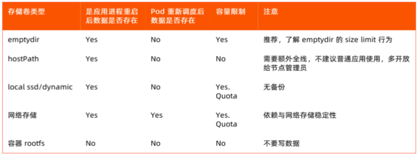

应用容器化 #
启动速度 #
健康检查 #
启动参数 #
Dockerfile #
- 基础镜像，Utility Lib
- 主进程, Fork bomb
- 代码和配置分离
配置： 环境变量， 配置文件mount - 分层控制
- Entrypoint
日志 #
- Log Driver
Blocking mode
Non Blocking mode - sideCar模式
- Node 模式
容器日志采集利器Log-Pilot
共享kernel #
- 系统参数配置共享
虚拟机和容器中的内核参数 kernel
K8S 内核参数 - 进程数共享 - Fork bomb
https://github.com/krallin/tini - fd数共享
容器可能用完主机所有的fd - 主机磁盘共享
lvm， 强IO
容器化应用的资源监控 #
- 容器中看到的是主机资源
top
java runtime.GetAvailableProcess() - cpu数
cat /proc/cupinfo
cat /proc/meminfo
df -k - 解决方案
- 查询/proc/1/cgroup是否包含kubepods关键字，表明运行在k8s之上。（参考1）
- 要得到单个容器的 CPU 使用率，我们可以从 CPU Cgroup 每个控制组里的统计文件 cpuacct.stat 中获取。单个容器 CPU 使用率 =((utime_2 – utime_1) + (stime_2 – stime_1)) * 100.0 / (HZ * et * 1 )。（参考2）
- 其他 lxcfs
- 对应用的影响
Java - Concurrent GC Thread， Heap Size， 线程数不可控
Pod Spec #
-
初始化需求(init container)
-
需要几个主container
-
权限？ Privilege和Security(PSP)
-
共享哪些namespace（PID，IPC，NET，UTS，MNT）
NET 默认共享 -
配置管理
环境变量
volumn mount -
DNS策略及对resolv.conf的影响
default
clsuterFirst: 默认 coredns
clusterFirstWithHostNet
none -
imagePullPolicy Image 拉取策略
Never，IfNotPresent， always -
数据保存 local-ssd: 独占的本地磁盘， 独占io， 固定大小， 读写性能高;
local-dynamic: LVM,动态分配空间， 效率低;
 -
可用性 self
参考 #
- 模块十一： 将应用迁移至Kubernetes平台
- 06|容器CPU(2):如何正确地拿到容器CPU的开销? - 李程远
- DEVOPS-迁移SpringMVC应用到生产K8S集群 未 java项目
- 如何把应用程序迁移到k8s 未 golang项目